Batch Multiple Picture Into Word via Quarto
Memasukkan sejumlah gambar ke Word sekaligus menggunakan Quarto
Tutorial ini memproses gambar dalam folder dan memindahkannya seluruh gambar ke dalam bentuk dokumen Microsoft Word beserta heading dan caption setiap gambarnya. Dokumen hasil kompilasi tersebut bisa digunakan sebagai lampiran.
Dokumen ini mereplikasi pekerjaan yang serupa di dokumen INR-1: Tutorial: Batch Multiple Picture Into Word via HTML.
1 Pros & Cons
Berikut yang harus diketahui mengenai keuntungan/kelemahan terkait tutorial ini.
1.1 Pros
- Dokumen yang sudah dibuat (
.qmdatau.md) bisa dikompilasi ke berbagai format seperti.pdfatau.html. - Dengan Quarto juga bisa mengubah dokumen tersebut dalam format presentasi (
.pptxatau.html). Sehingga lebih fleksibel saat ingin pindah ke format lainnya.
1.2 Cons
- Saat kompilasi ke
.docx, caption gambar dalam bentuk teks dan setiap angkanya bukan merupakan objek yang dapat diperbarui di Word. - Harus membiasakan dengan markdown dan VSCode (sebagai editor).
- Harus menginstall Quarto di mesin.
- Caption hasil kompilasi / render akan rata kiri (left alignment). Untuk mengubahnya bisa memodifikasi style output dokumen.
2 Persyaratan / Persiapan
Berikut daftar persyaratan atau hal yang harus dipersiapkan sebelum melakukan tutorial ini.
2.1 Program
Berikut daftar program yang digunakan dan yang harus terinstall di mesin:
- Windows 10/11 dengan powershell (clip.exe).
- Microsoft Excel (v2210).
- Visual Studio Code / VSCode.
- Quarto CLI.
- Extension VS Code: Quarto
Alternatif Download (Untuk Lokal) bisa diakses di XAGANT::TSM\_apps
- VSCode:
VSCodeUserSetup-x64-1.73.1.exe - Quarto:
quarto-1.2.269-win.msi
2.2 Nama File (Gambar)
- Informasi heading dan caption tersedia di nama gambar.
- Pola mengikuti
{Nama Proyek},{STG-XXY}_{KETERANGAN}__CS__Summation-str.jpg. Koma (,) harus tersedia di nama file sebagai pemisah. Double underscore__sebelumCSdigunakan sebagai pemisah antara Caption. - Heading menggunakan
{STG-XXY}. - Caption menggunakan
{STG-XXY} {KETERANGAN}.
2.3 Tips
- Mengubah karakter spesial nama gambar menjadi
-atau_. Agar dapat dikompilasi menjadi format PDF. Gunakan regex[^a-zA-Z 0-9-,_]. - Hindari menggunakan nama file yang memiliki spasi
. Ubah menjadi_. Agar tidak perlu mengubahnya menjadi%20(URL-encode).
2.4 Contoh Dokumen
Contoh hasil akhir tutorial ini bisa dilihat di STAGNATZ dengan alamat STAGNATZ::TSM Taruma\D\02 DEVELOPMENT\fiakodev\fiako-batchimage.
3 Tutorial
Pada dasarnya pembuatan dokumen .docx ini memanfaatkan quarto untuk mengkonversi dokumen markdown menjadi format .docx via pandoc (engine yang digunakan oleh quarto). Jadi, langkah akhirnya adalah membuat dokumen markdown yang berisikan gambar menuju folder tersebut. Untuk gambar sendiri, di dokumen markdown menggunakan sintaks . Hanya saja untuk dokumen markdown quarto harus diberi label gambar {#fig-label-gambar}, sehingga sintaks lengkapnya adalah {#fig-label-gambar}.
3.1 Persiapan
- Simpan gambar-gambar dalam satu folder. Dalam contoh ini gambar disimpan di folder
FOLDER-GAMBAR(Gambar 1).
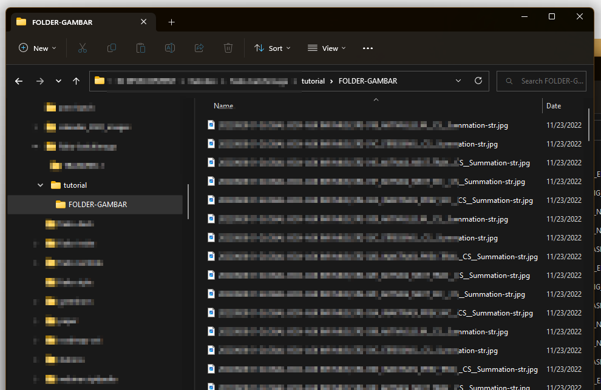
3.2 Ambil Daftar Nama Gambar
- Buka
Command Prompt (CMD)atauterminalpada folder tersebut dengan cara mengetikkancmddiWindows Explorer(atau cara lainnya) (Gambar 2).
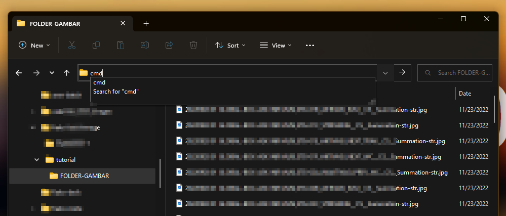
CMD di address bar- Ketik perintah
dir *.jpg /b | clipyang artinya melihat daftar file dengan extension.jpgdengan format sederhana/b(Gambar 3) kemudian|hasilnya di simpan ke clipboard denganclip(Gambar 4).
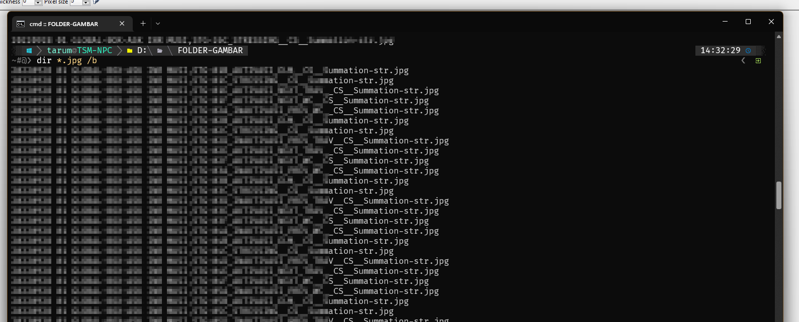
dir *.jpg /b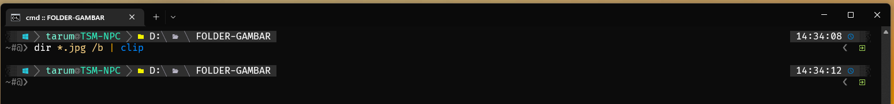
3.3 Buat Dokumen Quarto
- Buka folder satu level keluar dari folder gambar. Pada contoh ini, folder
tutorialmerupakan folder sebelum folderFOLDER-GAMBAR.
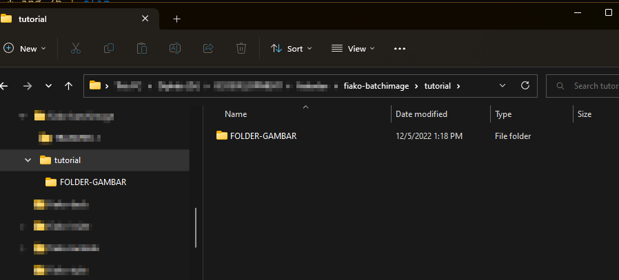
tutorial- Buka VS Code dengan folder tersebut (
tutorial). Membuka context menu (klik kanan) dan memilih “Open with Code” (Gambar 6).
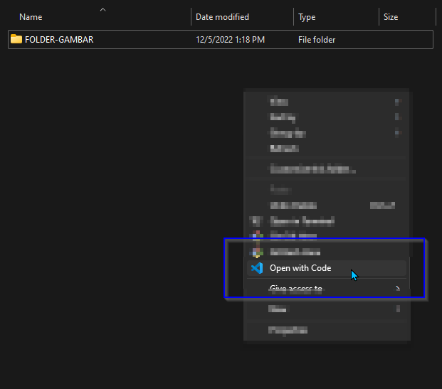
- Setelah membuka VS Code, buat dokumen baru dengan extension
.qmd(menggunakan.mdjuga bisa jika ingin sambil melihat preview built-in dari VS Code). Pada contoh ini dibuat dokumendaftar-gambar.qmd.
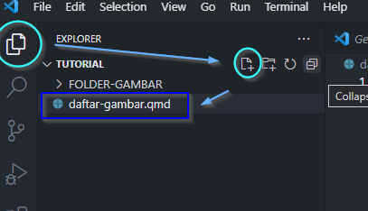
.qmd3.4 Menggunakan image-concatenator.xlsx
Mengingat pada tahap Bab 3.2, kita menyimpan daftar gambar di clipboard. Buka dokumen
image-concatenator.xlsx. (Ulangi tahap Bab 3.2 jika clipboard tertimpa dengan yang lain).Pada
A2sheetINPUTpaste daftar gambar yang tersimpan di clipboard (Gambar 8).
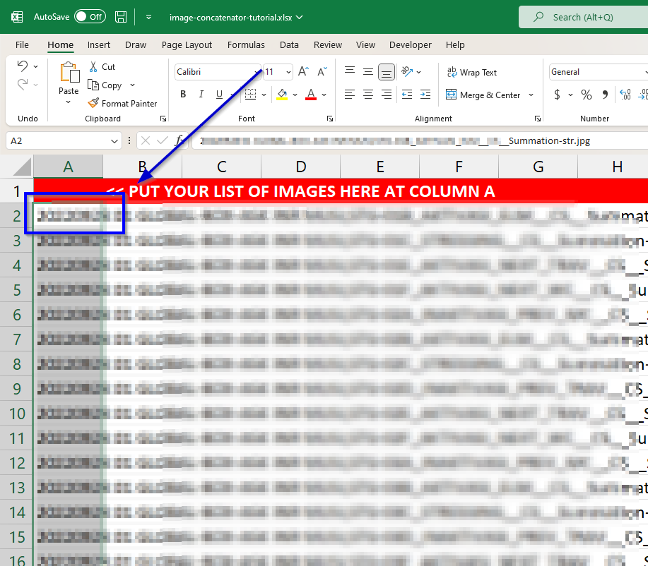
A2- Salin seluruh kolom
D:Ddariimage-concatenatordi sheetsOUTPUT_FINAL(Gambar 9). PastikanFOLDER IMAGESsudah diatur dengan nama folder gambar (Pada contoh) dan ditambah karakter/diakhir folder.
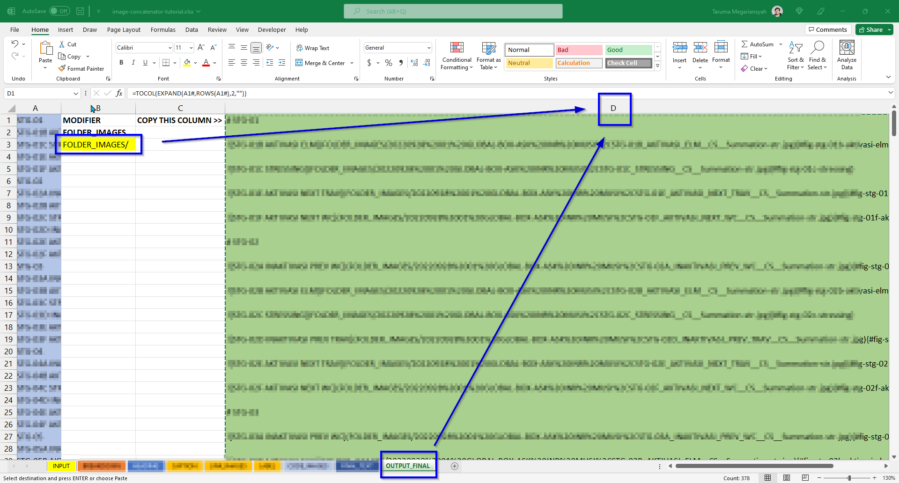
D:DPastikan nama folder tidak memiliki karakter spesial atau spasi. Jika karakter spesial tidak bisa dibaca langsung di markdown, ubah karakter tersebut dengan URL-encode.
Pada Gambar 9 tertulis nama folder FOLDER_IMAGES/ yang seharusnya FOLDER-GAMBAR/ (sesuai dengan nama folder kumpulan gambar).
- Paste hasil salin ke dokumen
.qmdyang telah dibuat.
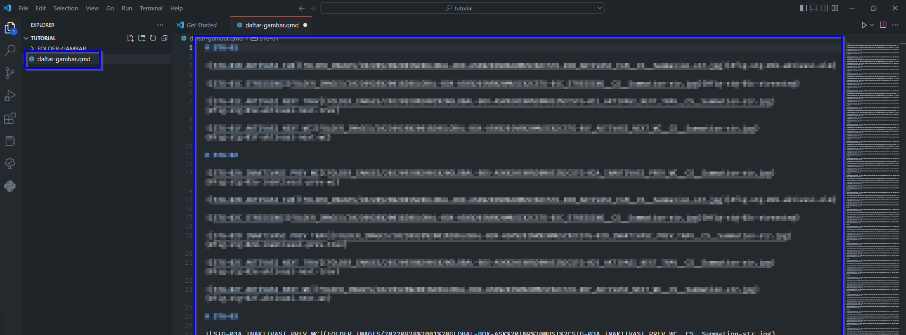
.qmd3.5 Kompilasi
Sebelum mengkompilasi dokumen quarto
.qmdke word, sebaiknya ditambahkan informasi YAML front matter di dokumen. Front matter merupakan bagian teratas dari dokumen yang dicirikan dengan batas---. Front matter tersebut bisa menyimpan informasi mengenai dokumen dan konfigurasinya.Taruh front matter berikut ke paling atas dokumen. Contohnya seperti pada Gambar 11.
---
title: "Lampiran GAMBAR"
date: 2022-12-05
author: TSM
format:
docx:
toc: true
toc-title: Daftar Isi
number-sections: true
reference-doc: template-laporan.docx
fig-align: center
crossref:
chapters: true
language: _language.yml
---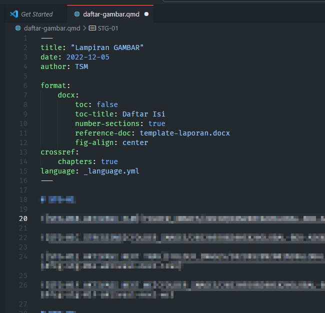
Pastikan dokumen template-laporan.docx dan _language.yml dalam satu folder dengan dokumen daftar-gambar.qmd.
- Ubah konfigurasi sesuai kepentingan. Jika tidak ingin menampilkan
title,date, atauauthor. Bisa mengubah baris tersebut menjadi komentar dengan menambah karakter#di depan baris. Seperti ini contohnya.
# title: "Lampiran GAMBAR"
# date: 2022-12-05
# author: TSM- Buka terminal di dalam vscode dengan menekan
Ctrl + `(atau viacmddi explorer juga bisa). Hasilnya seperti pada Gambar 12.
Jika terminal dalam vscode belum diatur, maka terminal yang digunakan adalah powershell. Untuk mengaturnya menjadi Command Prompt, buka Command Palette (Ctrl + Shift + P), pilih Terminal: Select Default Profile, dan pilih Command prompt.
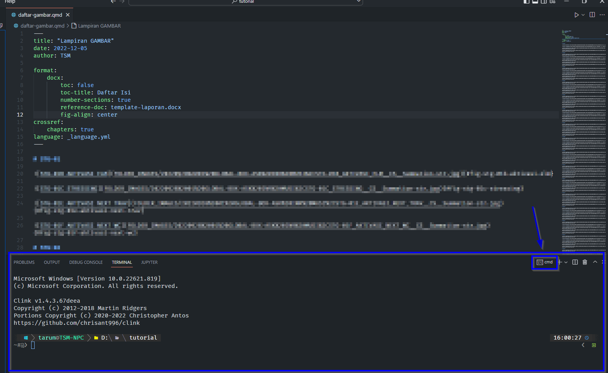
Command Prompt atau cmd- Ketik perintah
quarto render daftar-gambar.qmd --to docx. Perintah tersebut me-render / mengompilasi (quarto render) dokumen quarto (daftar-gambar.qmd) menjadi word (--to docx). Dokumen output akan dinamai sama dengan dokumen kuarto, sehingga output-nyadaftar-gambar.docx(Gambar 13).
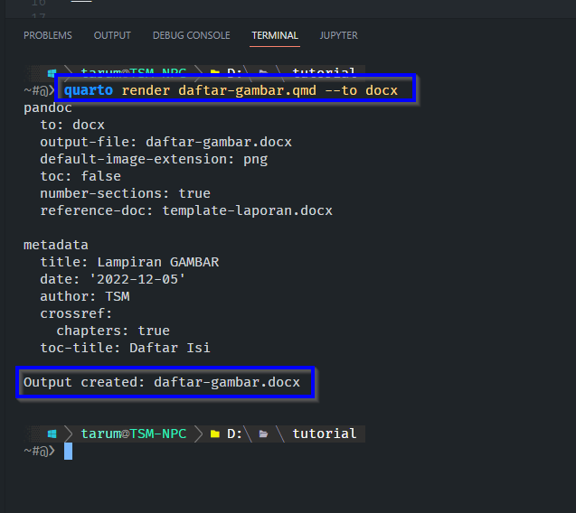
3.6 Selesai
- Dokumen output yaitu
daftar-gambar.docxdan dapat diakses di folder yang sama dengan dokumen quarto-nya (Gambar 14).
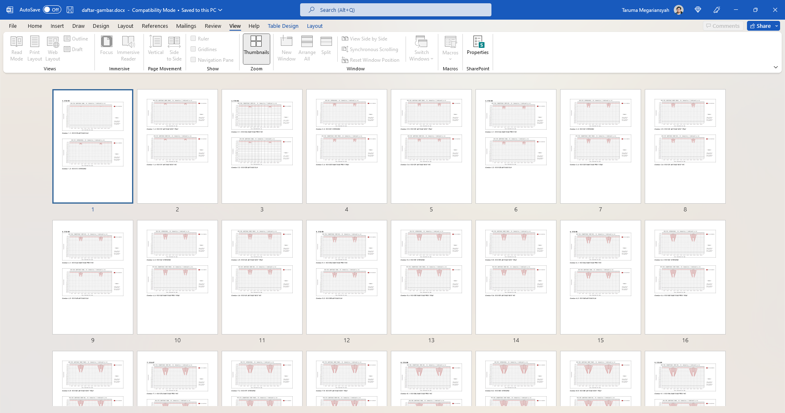
4 Adaptasi / Penyesuaian
- Penyesuaian bisa diatur dengan memodifikasi
image-concatenator.xlsx.
Jika terdapat pertanyaan, bisa langsung menghubungi saya.